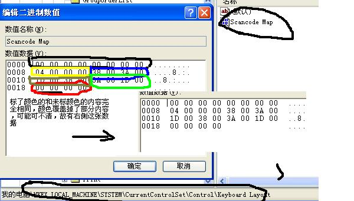
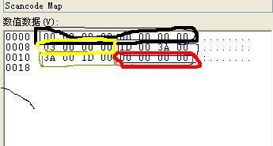

windows 的键盘映射
参考文献：
- Windows官网 有个下载链接scancode.doc ,第11页16页图表对应介绍每个按键对应哪个code
正文
用Emacs的用户将偶尔动用一下鼠标这种行为戏称为“高速缓冲错误”，可见他们对使 用鼠标进行编辑操作是多么地不屑。初学者肯定会有一种错觉，Emacs的默认的键绑定 并不怎么好用。说实话我也感觉不好用，不过这事也不能全怪Emacs，它是有历史原因 的。原因不是软件方面，也不是设计Emacs的人大脑浸水或者被驴踢了，问题的根源来 源于硬件：键盘。最初Emacs是为一种键盘设计的，这种键盘的Ctrl键位于现在PC机的 Alt键位置，而Emacs中最常用的键就是这个Ctrl键了.
以最常用的移动光标的四个键为:C-f（向前移动一个字符）,C-b（向后移动一个字符） C-a（移动到行首）,C-e(移动到行尾）为例，你分别用默认的Ctrl位置和把Alt当Ctrl 使尝试一下有什么不同，很明显后者按起来更舒服，默认的按键，你的手会扭屈得很不 舒服。所以使用Emacs的用户一般都会对自已的键盘做一点小小的处理，进行键盘映射。
将Ctrl和Alt键的位置进行交换。这是其中一种交换方法，这种交换方法，主要是用大 姆指来按映射之后的Ctrl键，还有一种映射方法，那就是交换Ctrl和CapLk这两个键， 这种交换方式，主要靠你的左手小指了，我最初就是用这种交换方法。你可以尝试一个 将CapLk看作Ctrl键，试着按一下一些键 组全，比如，Ctrl+c Ctrl+V ,Ctrl+e ,Ctrl+f ,是不是相对舒服许多，不过这种按键方式对你的小指绝对是个恶梦(我用这种 映射用了6个月)，我现在就经常感觉到小指的酸痛，所以正在尝试另外一种交换方式， 是将上面两种方式的组合，映射之后，按下Alt键是Ctrl，按下CapLk是Alt而按下Ctrl 就是CapLk了，这篇文章主要就是介绍如何在Windows下进行键盘映射。先后给大家讲解 一下原理，然后会给出从网上找到的一款软件，进行键盘映射。主要修改的是注册表中 这一项:
HKEY_LOCAL_MACHINE\SYSTEM\CurrentControlSet\Control\Keyboard Layout、 下面的 Scancode Map
上图说话: 这一项是交换ctrl alt capsLK三个键的： 
以及 capsLK与ctrl交换:

两张图都有一个相同点,由开头处由黑色圈出来的16个0，以及末尾的8个0。这几个0虽 然有意义，但是我们永远用不用修改它，它记录一些版本信息、结尾信息。所以不论交 换什么键，交换几项键，它们像你的阑尾一定存在。
另外一个相似点，由黄色圈出来的部分
04 00 00 00
03 00 00 00
它记录你一共交换了(几次键+1),比如，比如上面两张图分别交换了3个键，2个键，所 以3+1 ，2+1是为04 00 00 00 和03 00 00 00 . 剩下的就是真正的键盘映射信息,要想 进行键盘映射首先得知道具体每个键对应什么scancode比如这张表中列出了LCtontrol ,LAlt,CapsLk 三个键对应的scancode :
| 按键 | scancode |
|---|---|
| LCtrl | 1D |
| CapsLk | 3A |
| LAlt | 38 |
3A 00 1D 00
也就是原始按键码在后，目标码在前.
然后Caps映射为LAlt:
38 00 3A 00
LAlt 映射为 LCtrl:
1D 00 38 00
所以进行上述三键映射的代码组全起来就是
00 00 00 00 00 00 00 00 04 00 00 00 3A 00 1D 00 38 00 3A 00 1D 00 38 00 00 00 00 00
上述三个键映射的顺序无关紧要， 这个效果也相同
00 00 00 00 00 00 00 00 04 00 00 00 1D 00 38 00 38 00 3A 00 3A 00 1D 00 00 00 00 00
下载链接
- 本站保存了一份 scancode.doc
- Alt_Ctl_CapsLock交换的注删表修改文件
另外从网上找了一个软件，他所用的原理就是本文所介绍的，用它可以很方便的修改键盘映射